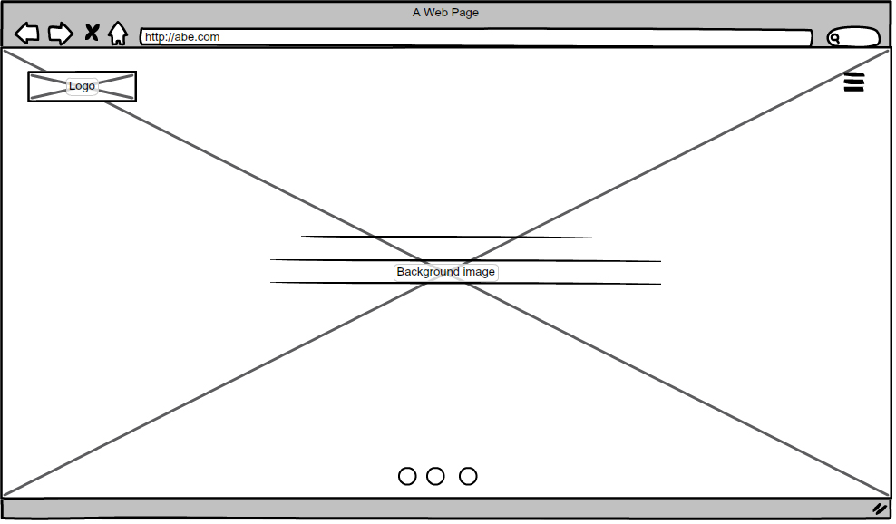
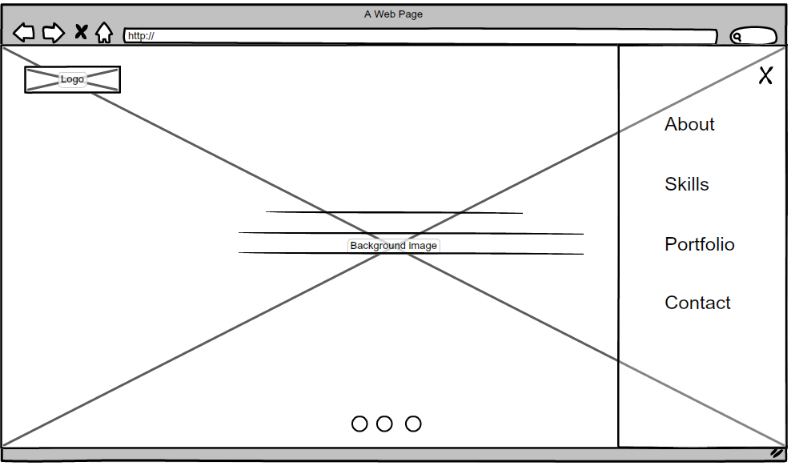
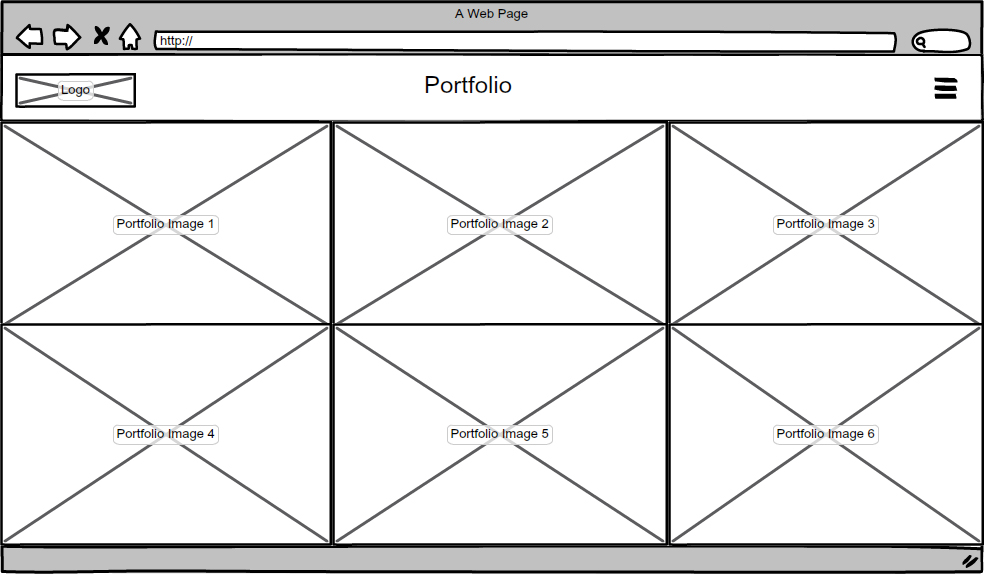
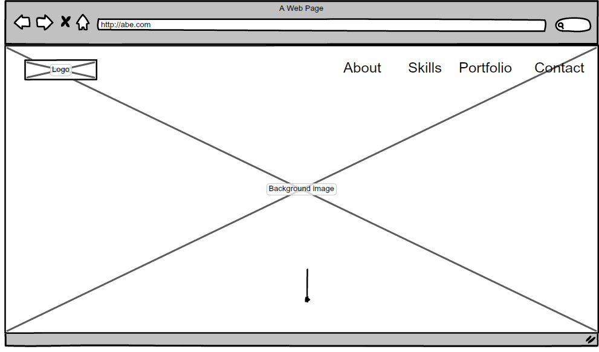
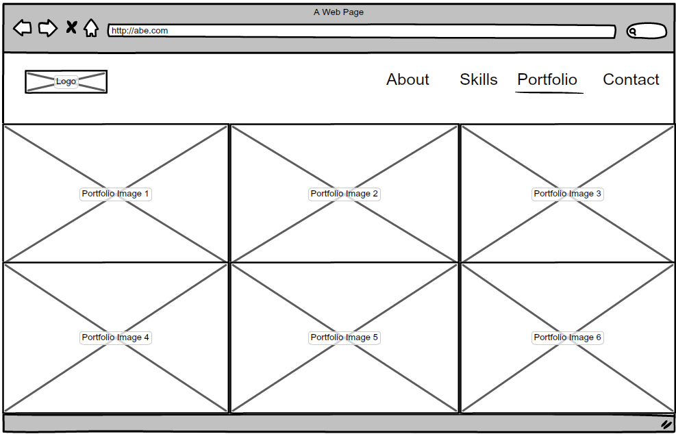
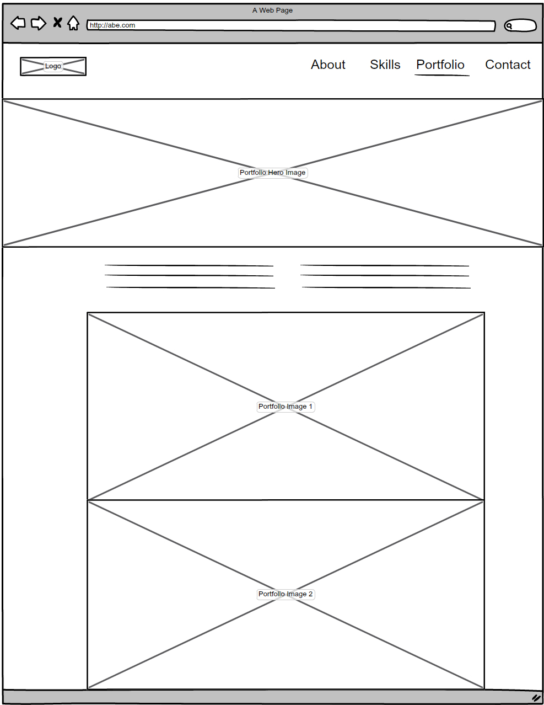

The two websites that most inspire me are Humaan and Alchemy Digital
Humaan
This site makes use of a lot of white space, making it very clean and simple but at the same time portraying a very high-end digital studio. The use of white space makes the focal points within each page easily stand out(e.g the home page has only two lines of text and nothing else around it). To a drunk user this site should be a piece of cake.
Humaan also makes great use of size within it's pages and this is supported by the effective use of white space. Headings are not overly large than the rest of the page content because they are given importance by the surrounding white space.
The site uses large colourful imagery to balance the white space. Again the large images and blocks of colour support the flow of the site and sets a hierarchy.
Alchemy Digital
Alchemy is also another great site that effectively uses white space to give structure and set a hierarchy to it's site. Size is move evident on this site compared to Humann. The headings are much more bolder and larger than the rest of the content within each page. This is a great way to draw the attention of a user and this become the focal point of the page. The use of large block colours and imagery also help balance the site from it's use of white space. The bright colours break up the site into sections giving a nice hierarchical structure to each page.
Both sites cleverly use white space to effectively focus the user on different focal points throughout the site. The white space complements the content on each page. At the same time Alckemys use of large vector images and bright blocky colours setting a structure and breaking up the site into sections.
The following are wireframes for a portfolio site I wish to build for myself.
This home page is clean and simple with emphasis on the few lines of copy in the middle of the page with a full alternating background image. The copy will also change as the background image changes. The navigation bar is represented by the menu icon. The only focus on this page will be the copy in the middle.
The navigation is a sliding side bar that will appear when the menu icon is clicked. This bar will be placed over the background image and have a low opacity. The menus will be large and clear. This will make sure the navigation bar does not take away from the full background images and copy that will be in the middle of the home page.
Each project will be displayed as a thumbnail. This will take up the full width of the site to focus the viewer on the work and give importance to each project.
The second version of my home page is a large full page background image. This also draws focus to the image on the page.
This page is similar to the other portfolio page but in this version the menu items are always on the top bar throughout the whole site. Each portfolio thumbnail will have a hover effect. This layout has a clear hierarchy and the focal point being the portfolio thumbnails.
The detail view of each portfolio will have a large full width hero image to set the mood of the project. The focus will be on that large image once a viewer lands on this page. From there they will be presented with some short copy describing the project and then followed by large images of the project. These images will be on a white page with no other elements around each image. This allows the work to shine and become the main focus on the page as a viewer scrolls down.
